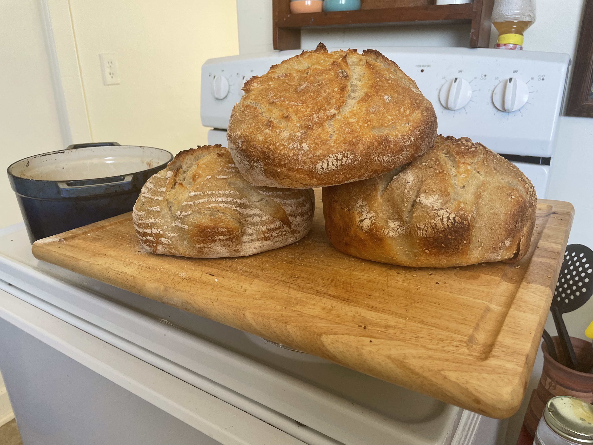

KATE ROCHE'S SPECIAL - SOURDOUGH BREAD

INGREDIENTS
- 250g All-Purpose Flour (or 150-200g AP + 50-100g specialty flour, such as wheat, rye, etc.)
- 250g Bread Flour
- 400g lukewarm water
- 75g Activated/fed sourdough starter
- 10g Salt
SUPPLIES/EQUIPMENT
- Digital kitchen scale
- Silicone mixing spoon
- 3-5qt Dutch oven
- 1 clean wide-mouth glass jar
- 2 thick rubber bands
- Jar of sourdough discard (or empty jar if this is your first time)
- Dough scraper (optional, but recommended)
- Banneton proofing bowl (optional)
DIRECTIONS
Special Note: Sourdough takes a long time and multiple different steps before you actually end up with a loaf of bread.
Unless your full-time job is as a baker, you'll need to play with the rhythm of each step to figure out how it fits into your schedule.
Each step has the approximate time allotted in parenthesis {ex. (2 hours)} to give you a sense of about how long you should be home and awake to complete each step.
You can refrigerate your dough in between steps for up to 24-48 hours, until you have enough time to complete the next step in full.
An example of a full start-to-finish rhythm will be provided after the directions, but ultimately it's up to the baker!
- Refresh Your Sourdough Starter (4-12 hours)
- Take starter out of fridge and let come down to room temp.
(Let sit 2-3 hours or overnight).
- Weigh out 50g of starter (double for 2 loaves) in your clean, wide-mouth jar. Put the rest in your "discard" jar.
- Feed starter with 90g lukewarm water (NOT HOT! Too hot will kill your starter!) and 100g bread flour. Mix with a chopstick or butter knife until combined.
- Put rubber band around where the starter comes up to, so that you can see how far it rises.
- Put a napkin, coffee filter, cheesecloth, or clean cloth around the top of jar, secure with other rubber band
- Leave in a warm location until it doubles or triples in size (usually about 4-12 hours depending on how warm the environment is and how active your starter gets after being fed)
Special Notes on Refreshing Your Starter:
- Your starter is ready to bake with when it's doubled or tripled in size and passes the "float test". Take a pinch of the grown starter and place in a cup of water. If it floats, it's ready to go! If it doesn't, either let it rise longer, or if it is still liquidy, you might need to feed / refresh the starter again.
- If you notice starter residue farther up your glass jar than it currently is, your starter might have reached its peak growth and then started to sag down. If it's been a long time since it peaked, you might need to feed/refresh again to get it active enough to bake with.
- Mix Your Dough (1 hour)
- Mix 500g flour + 400g warm water and knead until fully incorporated.
Place a damp kitchen cloth over the bowl and let sit (or "autolyse") for at least 45 minutes.
- Mix in activated sourdough starter + salt until the dough is smooth and springy.
- Re-feed your starter (Step 1) and leave to activate if baking in the next 24 hours. Otherwise, store in the fridge.
Follow Step 1 to feed starter weekly or when baking your next loaf, whichever comes first.
- Stretch & Fold Dough (2 hours) |
Demonstration: Stretch & Fold Technique
- Every 30 minutes for 2 hours, stretch & fold the dough to develop the strength of the gluten.
- First Dough Rise
- Cover bowl with a damp cloth (or a cover if storing in fridge).
Let sit no more than 4-6 hours, or 8-24 hours/overnight in the fridge
- Final Shaping |
Demonstration: Final Shaping/Creating Tension
- Transfer dough onto a clean, floured surface.
- Shape dough to fit baking container, gently stretching and folding under itself
to create tension on the surface of the loaf.
- Let shaped dough sit on counter for 10-20 minutes
- Using dough scraper, transfer to a heavily floured banneton bowl or other final proofing bowl (lined with parchment paper or flour).
- Let proof at room temperature for 1-3 hours or in the fridge for up to 24 hours.
Dough will proof much slower in the fridge, so don't proof in the fridge unless it has ample extra time to rise.
- Preheat oven to 450 degrees Farenheit one hour before you'll be baking your bread.
- Bake your loaf! (Finally!)
- Preheat your oven to 450 ℃, with the dutch oven inside.
- Drop your dough from the banneton (or proofing) bowl onto two crossed strips of parchment paper on the counter.
- Score your dough with a large X across the whole top surface.
- Using the strips of parchment, gently transfer your dough into your dutch oven or other baking vessel.
- Bake at 450 for 30 minutes with the top on.
- Remove the lid, bake for 20 more minutes or until sufficiently browned
- Let the loaf cool completely before cutting into the loaf!
Other Notes:
- Always work dough with slightly wet hands - it gets extremely sticky!
[Video Demonstration!!]
CONTACT ME
Lauren Tobias
E-mail me